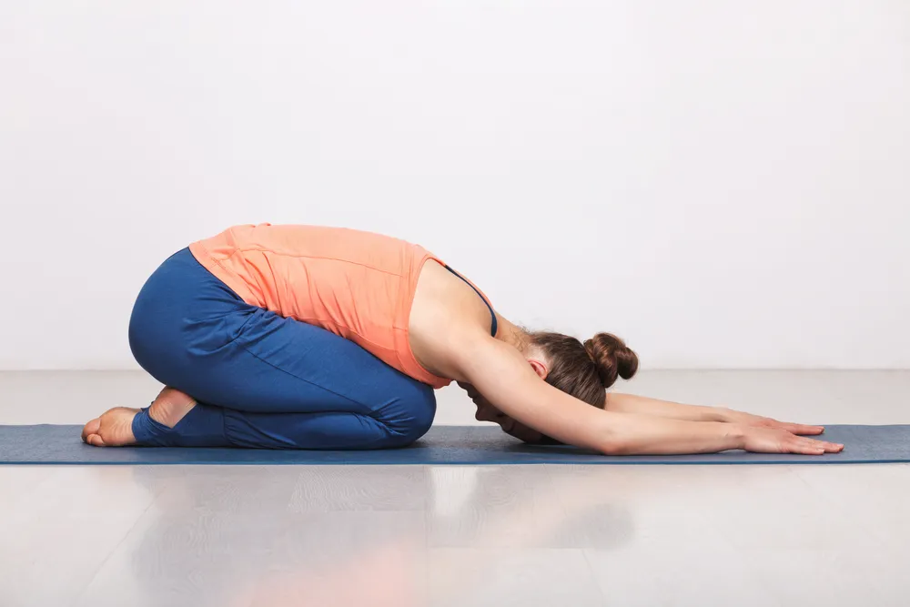

Exercise Tips for Fibromyalgia

Do you or someone you love have fibromyalgia? This condition can cause considerable pain and distress. It’s estimated that just under 6-million people in the United States alone suffer from this disorder, leaving millions of people in widespread pain every day. Fortunately, while few effective medical interventions exist, holistic therapies work wonders for the disorder. One of the natural treatments that serve best is physical exercise. While performing movements may sound like the last thing you want to do in a fibro flare, pushing yourself to do even just some exercise, may improve your symptoms significantly.
What Is Fibromyalgia and How Does It Impact Activity Levels?
Fibromyalgia is a disorder characterized by widespread musculoskeletal pain , which is often accompanied by memory and mood changes. Researchers are still unsure about what causes the condition. Sometimes it develops after a physical trauma such as an accident or surgery, while other times, symptoms grow progressively worse with no identifiable cause.
Some scientists classify fibromyalgia as a cousin to arthritis disorders, and people with rheumatoid arthritis or lupus are more likely to develop the disease . Fibromyalgia patients are three times more likely to experience depression than their peers. This phenomenon isn’t surprising when you consider that some doctors continue to dismiss the condition. Plus, chronic pain often leads to adverse financial situations.
When it comes to movement, you might not want to work out at all when a flare makes your symptoms worsen. However, getting off the couch might be your best recipe for relief. One 2017 review found that aerobic exercise improves both pain and physical function , although it didn’t necessarily eliminate fatigue. If you’re looking to treat your fibromyalgia holistically, give the following activities a try.
Best Cardio Exercises for Fibromyalgia Patients
Cardiovascular exercise gets your heart pumping, and it’s one of the most reliable ways to find pain relief quickly. Consider the following activities.
Running
If you have a comorbid condition that affects your joints, such as rheumatoid arthritis, you might find high-impact activities painful. However, barring such disorders, you might find running significantly reduces your aches — even if your trigger points fall primarily in your knees and hips.
The critical component is starting slowly and listening to your body. You might consider the run-walk-run method of training to give your body a break from the continual pounding on the pavement. Another option is to run inside on a treadmill for less stress on your joints.
Walking
Walking is one of the best forms of exercise because it’s free. All you need is a pair of comfortable tennis shoes. Even people who need assistive devices such as crutches can enjoy a walk. Although you may need to take things slow.
Does any sort of impact on land cause your knees to hurt? If so, why not bring your walk into a pool? While you won’t go very fast, the added resistance of the water will nevertheless make your heart beat faster and the weightlessness of the water will ease the pain in your joints.
Swimming
Any type of aquatic exercise is fabulous for people with a comorbid arthritis diagnosis. If you couldn’t get enough of the beach or the pool as a child, get back in the water now. You can swim laps to meet your cardiovascular activity quota, or you can participate in an aqua aerobics class if you’re more social.
You don’t even need to get your hair wet if you don’t want to. Some facilities provide foam water weights that enable you to perform toning exercises underwater, too.
Dance
Dancing is an ideal form of exercise if you have fibromyalgia, especially if you’re worried about your cognitive health. Researchers from the Albert Einstein School of Medicine performed a study on 11 different types of cardiovascular fitness in the elderly. They investigated activities like swimming, golf and tennis. Only one exercise decreased the risk of developing dementia — dance.
Why is dance so beneficial for your brain? It combines both mental effort and social interaction with physical movement. Any aerobic exercise increases oxygen flow to your neurons, but memorizing Zumba routines and the like also makes you concentrate. This practice improves your visual recognition and decision-making skills.
Biking
If the trigger points that bother you the most lie in your knees, you might find significant relief from cycling . Although it’ll get your heart working, it’s non-impact, meaning your joints won’t endure unnecessary jostling and jarring.
People with certain back conditions, such as degenerative disc disease, may find the continual posture of hunching over the handlebars problematic, however. If this situation applies to you, you can use recumbent bikes that offer enhanced lumbar support while still providing a terrific workout.
Are you crunched for time, like so many Americans are? If so, why not combine your exercise routine with your commute? Even if you encounter challenging hills on the way to the office, you can invest in an electric bike for an extra boost of oomph when you need it to avoid arriving all sweaty and disheveled. Many models let you alternate between pedal power and cruise control.
Best Toning Exercises for Fibromyalgia
Three components make up any complete fitness program — cardio, toning and flexibility. You can slip by with toning sessions only two to three days weekly, although some experts recommend training for up to 30-40 minutes , three to four days per week. You have plenty of options for building and maintaining muscular strength — and preserving your independence despite your condition.
Machine Weights
Machine weights offer the advantage of keeping your posture in alignment so that you can focus on building strength and muscle mass in specific areas. This means that you won’t be as reliant on your core and other muscles for stabilisation as you would when performing free-weight exercises.
Many fitness facilities offer a free session or two with a personal trainer alongside your membership. Do take advantage of this amenity. They can show you how to adjust the machines properly for your size and instruct you on the correct techniques.
Free Weights
Free weights have several advantages. They require you to work additional muscle groups to stabilize your core while you perform the motions. They’re also less expensive and more versatile than machine weights. You can even substitute canned goods or gallon milk jugs filled with water or sand in a pinch.
That said, minding your form while using free weights is crucial as you’ll expend more energy performing these exercises versus machine weights. It’s a wise idea to book a session or two with a trainer to learn the ropes. Once you’ve mastered the techniques, you can buy a set for home use and get your bicep curls in during television commercials.
Pilates
You can perform pilates exercises on a reformer machine or without any equipment at all. The ability to do it without props makes it an ideal form of toning for people who are on a limited budget. You don’t have to invest in pricey memberships, either.
Once you learn the moves, you can find free and inexpensive workout apps that enable you to sneak in fitness anywhere. These come in handy if you frequently travel because you can do them in your hotel room. You can even squeeze in — pun intended — a few rear leg lifts while you wait in line.
Resistance Bands
Resistance bands are relatively inexpensive, plus you can toss them into a suitcase without adding any noticeable extra weight or taking up too much space. Plus, they slide under your couch, making them a snap to retrieve and sneak in some reps while you relax.
Resistance bands come in various strengths, and since they’re cheap, it’s wise to buy several pairs if you have the budget. Inspect your bands regularly for any frayed areas. Using these bands regularly is a great way to maintain your strength and muscle tone. You can even bring them to your local park to get some fresh air while you exercise.
Best Flexibility Exercises for Fibromyalgia
Yoga and any flexibility exercises benefit people with fibromyalgia — and other chronic pain conditions — substantially. The best part of all? You can find free yoga videos on YouTube to enjoy anytime, anywhere.
If you start and end your day with a bit of stretching, you may discover you sleep more soundly and wake up with unpleasant flares less often. Here are some of the most helpful poses to perform on days when your fibromyalgia roars like a hungry bear.
Cat-Cow Pose
The cat-cow pose is the best gentle backstretch for when your mid-back trigger points start screaming profanities in foreign tongues. To perform this stretch, get onto your hands and knees. As you inhale, let your belly drop down into the cow position. Imagine you’re letting massive udders sag down toward the ground. Then, as you exhale, round out your spine like a scared Halloween kitty.
You can perform this movement with your breath several times, as often as needed for relief. You can even do a modified version at your work desk by placing your hands on your thighs and bowing and extending your back as you breathe.
Camel Pose and Bridge Pose
If you can kneel on your knees without pain, give the camel pose a try. To segue into this challenging asana safely, start by placing your hands against your lower back as you arch backward. As you grow more flexible, take your hands down to rest on your heels.
If kneeling gives your knees misery, you can produce a similar effect with bridge position. Lie on your back and bend your knees, moving your feet close to your buttocks. Contract your hamstrings and lift your glutes off the floor, stretching your arms beneath you. If you can, clasp your hands underneath your glutes and squeeze your shoulder blades together.
Child’s Pose
The child’s pose eases low and mid-back discomfort and calms muscle spasms. To perform this asana, get on your hands and knees and let your buttocks sink to your heels. Reach your hands out in front of you, trying to lengthen the muscles lining your spine open wide. Breathe through the movement until you feel the tension start to release.
Improve Your Fibromyalgia Symptoms Through Movement
Exercise is a fantastic holistic therapy for fibromyalgia. The next time you feel a flare coming on, get moving. You may surprise yourself with how much better you feel!
Source: https://activebeat.com/fitness/best-exercises-for-fibromyalgia/